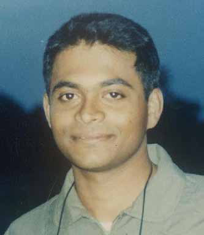
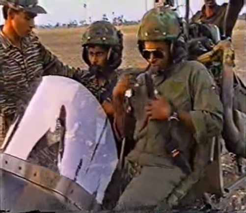
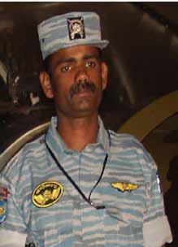
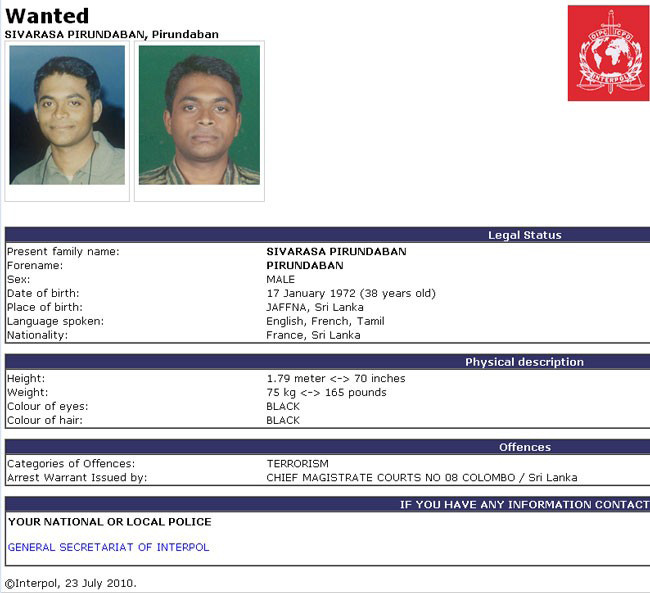

The Real Masterminds Behind Janaki's Operations
The Real Masterminds Behind Janaki's Operations
Jaffna Monitor hellojaffnamonitor@gmail.com 22 J anaki is not the mastermind but acts as the central hub and chief organizer for former LTTE elements looking to stir unrest in Sri Lanka, a credible source revealed. While she coordinates operations from Chennai, the true masterminds behind the scenes are two high-ranking former LTTE figures: Sivarasa Pirunthapan, also known as Achchuthan/Suresh, a former LTTE Air Force pilot, and Pukalenthi Master, a key figure from the LTTE's Intelligence Wing. These two individuals are believed to be the real architects of the clandestine network, pulling the strings from abroad while Janaki manages on- ground activities. One of the masterminds, Sivarasa Pirunthapan, also known as Pirunthapan Rajah, Achchuthan, and The Real Masterminds Behind Janaki's Operations Achchuthan's Empire: Unmasking the LTTE's Covert Revival Network Sivarasa Pirunthapan, also known as Pirunthapan Rajah, Achchuthan, and Suresh

Jaffna Monitor hellojaffnamonitor@gmail.com 23 Suresh, was born on January 17, 1972 in Alaveddy, Jaffna. A former LTTE Air Force commander and pilot, he is an alumnus of Jaffna Hindu College (1988 O/L batch). Achchuthan's connection to aviation runs deep—his grandfather served in the Royal Air Force in Malaysia during World War II, and his elder brother, Pathipan Sivarasa, holds a prominent role as a Senior Aerospace Engineer at General Dynamics Mission Systems – Canada. However, Pathipan is more than just an aerospace engineer—he is also a creative innovator. Pathipan developed a specialized machine for making Idiyappam (string hoppers), a popular South Indian and Sri Lankan delicacy, and even secured a patent for the design. The design registration details reveal that the machine was officially registered on April 4, 2011, following a priority filing in India on October 10, 2010, under OHIM (now known as the European Union Intellectual Property Office - EUIPO). Sivarasa Pirunthapan's/ Achchuthan's listed address is 6A Rue Rognon, Saint-Pierre-d'Autils, La Chapelle-Longueville (Eure), and he holds French nationality. He has married Sakalya Sivarasa since October 4, 2004, in Kilinochchi, Sri Lanka. Achchuthan pursued his initial flight training in France, using a cover story as a team leader at a restaurant in Disneyland Paris. He traveled extensively across Europe, Africa, Malaysia, Singapore, and the Far East to enhance his piloting skills and aviation knowledge. During one of these visits to the Far East, Achchuthan was reportedly arrested while carrying a substantial sum of money. However, he managed to escape by disguising himself as a businessman. Credible LTTE sources informed Jaffna Monitor that Achchuthan provided combat flight training to LTTE suicide cadres. His technical expertise played a crucial role in preparing pilots for air suicide missions as early Sivarasa Pirunthapan, also known as Acachuthan, with his fellow LTTE Air Tiger commanders in 1998 Pathipan Sivarasa

Jaffna Monitor hellojaffnamonitor@gmail.com 24 he later named his daughter after this alias. His daughter, an accomplished archer and chess player, is a member of both the Dourdan Archery Club and the Pierre Perret Chess Club. A credible source revealed that during the peace period, Ilangeswaran was sent abroad with two other LTTE operatives to study advanced technology. Renowned for his technical expertise, Ilangeswaran now leads what remains of the LTTE's cyber-attack team from France. In early 2010, the Sri Lankan Ministry of Defense reported that information regarding several international LTTE operatives was uncovered through diaries and notes found at the office of Castro, the former head of the LTTE's international wing, in Visvamadu. Documents seized during the investigation included records related to front organizations funding the LTTE and details about Tigers' ships and foreign trade operations. It was during this period that the name Sivarasa Pirunthapan, also known as Achchuthan or Suresh, gained prominence. During the same period, Interpol issued a Red Notice for him on March 22, 2010 (Control No. A-1994/3-2010), signifying a request for international law enforcement to locate and provisionally arrest him, pending extradition or other legal action based on serious criminal investigations. His name was later added to the List of Designated Persons under paragraph 4(2) of the United Nations Regulations No. 1 of 2012. He was officially listed on February 25, 2014, marking his inclusion in international monitoring for sanctions and restrictions. A classic Vadivelu joke goes: 'ehd; NjLw khjpup NjLNwd;> as 1998, including during the 2003–2004 ceasefire period. Sources further disclosed that Achchuthan coordinated and commanded LTTE air raids on Colombo via satellite communication from an overseas base. Reports also indicate that Achchuthan controls multiple aviation-related assets abroad, bolstering the LTTE's operational capabilities and expanding its international reach. After the assassination of Colonel Shankar—the LTTE air wing's leader— on September 26, 2001, in a Claymore attack, Achchuthan briefly took over the leadership of the air wing, consolidating his authority and influence within the organization. Now, Achchuthan is responsible for funneling large sums of money to Janaki, enabling her to build and expand the network of former LTTE fighters across Sri Lanka. Achchuthan operates alongside his brother, Sivarasa Langeswaran, a software professional who, according to sources, was formerly associated with the LTTE under the nom de guerre 'Barathy.' In a symbolic gesture, Sivarasa Langeswaran, also known as Barathy
Jaffna Monitor hellojaffnamonitor@gmail.com 25 eP xspAw khjpup xsp" (I pretend to search for you, and you pretend to hide). In a similar fashion, Achchuthan seems entirely unfazed by the Interpol red notice against him—and Interpol, for its part, appears satisfied that issuing the notice was more than enough. Following the notice, Sivarasa Pirunthapan made a subtle shift in identity, rebranding himself as Pirunthapan Rajah. However, this nominal change did little to diminish his influence, and he remains a key figure at the helm of the LTTE's surviving business empire. Meanwhile, Achchuthan has taken control of several businesses and supermarkets across France and Europe—remnants of the LTTE's once-expansive financial network. Outwardly, he appears to be just another businessman leading a normal life. Yet, beneath this facade lies a deliberate and insidious effort to destabilize Sri Lanka. For years, he and his network have quietly sown unrest, jeopardizing the fragile peace and manipulating former militants still tied to the conflict. The 2014 LTTE revival attempt stands out as one of the most serious and well-coordinated efforts to resurrect the group since its military defeat in May 2009—allegedly funded by Achchuthan. The operation was led by three seasoned operatives: Suntharalingam Gajatheeban (alias Theiveegan), Navaratnam Navaneethan (alias Appan), and Ponniah Selvanayagam Kajeepan (alias Gobi). All three were killed in a military operation carried out by Sri Lankan forces. Among the trio, Theiveegan shared a particularly close bond with Achchuthan, as both had served as LTTE pilots during the conflict. Today, Achchuthan and his inner circle are weaving a dangerous web, using individuals like Janaki to reconnect with former fighters who had seemingly left their militant lives behind. Through manipulation and coercion, they aim to drag these individuals back into the vortex of violence. Their objective is clear: to revive Interpol Red Notice against Sivarasa Pirunthapan (Achchuthan) Suntharalingam Gajatheeban, also known as Theiveegan

